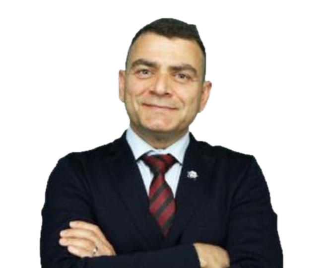

YENİ BİR SAYFA
2027’YE FARKLI BİR BAŞLANGIÇ YAPMAYA NE DERSİN?
Alternatif iş fikirlerine açık mısın?
Belki de yeni bir hikâyenin başlangıcındasın.

MURAT ZORLUOĞLU
DM’den“AÇIK”yaz.
Tanışalım, konuşalım.
Birlikte neler yapabiliriz, bakalım.